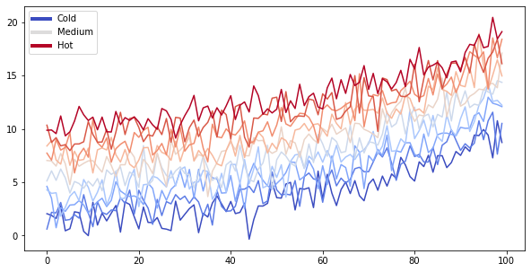

Content with notebooks
Contents
Content with notebooks¶
You can also create content with Jupyter Notebooks. This means that you can include code blocks and their outputs in your book.
Markdown + notebooks¶
As it is markdown, you can embed images, HTML, etc into your posts!

You can also \(add_{math}\) and
\[
math^{blocks}
\]
or
\[\begin{split}
\begin{aligned}
\mbox{mean} la_{tex} \\ \\
math blocks
\end{aligned}
\end{split}\]
But make sure you $Escape $your $dollar signs $you want to keep!
MyST markdown¶
MyST markdown works in Jupyter Notebooks as well. For more information about MyST markdown, check out the MyST guide in Jupyter Book, or see the MyST markdown documentation.
Code blocks and outputs¶
Jupyter Book will also embed your code blocks and output in your book. For example, here’s some sample Matplotlib code:
from matplotlib import rcParams, cycler
import matplotlib.pyplot as plt
import numpy as np
plt.ion()
<matplotlib.pyplot._IonContext at 0x1c4a2286a40>
# Fixing random state for reproducibility
np.random.seed(19680801)
N = 10
data = [np.logspace(0, 1, 100) + np.random.randn(100) + ii for ii in range(N)]
data = np.array(data).T
cmap = plt.cm.coolwarm
rcParams['axes.prop_cycle'] = cycler(color=cmap(np.linspace(0, 1, N)))
from matplotlib.lines import Line2D
custom_lines = [Line2D([0], [0], color=cmap(0.), lw=4),
Line2D([0], [0], color=cmap(.5), lw=4),
Line2D([0], [0], color=cmap(1.), lw=4)]
fig, ax = plt.subplots(figsize=(10, 5))
lines = ax.plot(data)
ax.legend(custom_lines, ['Cold', 'Medium', 'Hot']);

Codigo de Optimización con Newton. Funcion de Rosenbrock
import random as r
import numpy as np
import matplotlib.pyplot as plt
import matplotlib.animation as animation
from mpl_toolkits.mplot3d import Axes3D
#Fijamos la semilla
#Funcion f(x,y)=exp(-x^2-y^2)
def Rosenbrock(x,y):
return (1-x)**2+100*(y-x**2)**2
def HessianR(x,y):
return [[2-400*(y-3*x**2),-400*x],[-400*x,200]]
def GradientR(x,y):
q=[-2*(1-x)-400*x*(y-x**2),200*(y-x**2)]
return np.array(q)
#Error
def InftyNorm(v):
return max(abs(np.array(v)))
#Alpha
def Curvatura(x,y,a,p,c,gf):
xk = x + a * p[0]
yk = y + a * p[1]
GF=abs(np.dot(gf(xk,yk),p))
Prueba=GF-c*abs(np.dot(gf(x,y),p))
return Prueba
def Armijo(x, y, alpha, p, f, gf, c):
xk = x + alpha * p[0]
yk = y + alpha * p[1]
fk = f(xk, yk)
Prueba = fk - (f(x, y) + c * alpha * np.dot(gf(x,y),p))
return Prueba
def Wolf(x,y,p,f,gf):
A=1
alpha=0
while A>0:
alpha=r.random()
c1 = r.random()
aux = r.random()
c2 = c1 + (1 - c1) * aux
A= Armijo(x, y, alpha, p, f, gf, c1)
C= Curvatura(x,y,alpha,p,c2,gf)
if C<0:
break
return alpha
#Condicion Inicial
v0=[0.8,0.8]
x0=v0[0]
y0=v0[1]
H0=HessianR(x0,y0)
HI0=np.linalg.inv(H0)
p0=-np.dot(HI0,GradientR(x0,y0))
X=[x0]
Y=[y0]
P=[p0]
F= [Rosenbrock(x0,y0)]
alpha=Wolf(X[0],Y[0],P[0],Rosenbrock,GradientR)
for i in range(15):
X.append(X[i] + alpha * P[i][0])
Y.append(Y[i] + alpha * P[i][1])
H = HessianR(X[i + 1], Y[i + 1])
HI = np.linalg.inv(H)
p = -np.dot(HI, GradientR(X[i + 1], Y[i + 1]))
P.append(p)
alpha = Wolf(X[i + 1], Y[i + 1], p, Rosenbrock, GradientR)
F.append(Rosenbrock(X[i+1],Y[i+1]))
print(i)
def func(num, dataSet, line):
# NOTE: there is no .set_data() for 3 dim data...
line.set_data(dataSet[0:2, :num])
line.set_3d_properties(dataSet[2, :num])
return line
dataSet=np.array([X,Y,F])
Npoints=len(X)
fig=plt.figure()
ax=Axes3D(fig)
line=plt.plot(dataSet[0],dataSet[1],dataSet[2],lw=4,c='black')[0]
ax.set_xlabel('X')
ax.set_ylabel('Y')
ax.set_zlabel('Z')
ax.set_title('Evolucion de punto')
ax.set_xlim(0.5,1.5)
ax.set_ylim(0.5,1.5)
xp=np.arange(0.5,1.5,0.25)
yp=np.arange(0.5,1.5,0.25)
xp,yp=np.meshgrid(xp,yp)
zp=(1-xp)**2+100*(yp-xp**2)**2
Anima = animation.FuncAnimation(fig, func, frames=Npoints, fargs=(dataSet,line), interval=50, blit=False)
ax.scatter(0,0,1,c="red",lw=5)
ax.plot_surface(xp, yp, zp,rstride = 1,cstride = 1)
print(x0)
print(y0)
plt.show()
0
1
2
3
4
5
6
7
8
9
---------------------------------------------------------------------------
KeyboardInterrupt Traceback (most recent call last)
~\AppData\Local\Temp\ipykernel_19392\2218595650.py in <module>
74 p = -np.dot(HI, GradientR(X[i + 1], Y[i + 1]))
75 P.append(p)
---> 76 alpha = Wolf(X[i + 1], Y[i + 1], p, Rosenbrock, GradientR)
77 F.append(Rosenbrock(X[i+1],Y[i+1]))
78 print(i)
~\AppData\Local\Temp\ipykernel_19392\2218595650.py in Wolf(x, y, p, f, gf)
48 c2 = c1 + (1 - c1) * aux
49 A= Armijo(x, y, alpha, p, f, gf, c1)
---> 50 C= Curvatura(x,y,alpha,p,c2,gf)
51 if C<0:
52 break
~\AppData\Local\Temp\ipykernel_19392\2218595650.py in Curvatura(x, y, a, p, c, gf)
28 yk = y + a * p[1]
29 GF=abs(np.dot(gf(xk,yk),p))
---> 30 Prueba=GF-c*abs(np.dot(gf(x,y),p))
31 return Prueba
32
<__array_function__ internals> in dot(*args, **kwargs)
KeyboardInterrupt: